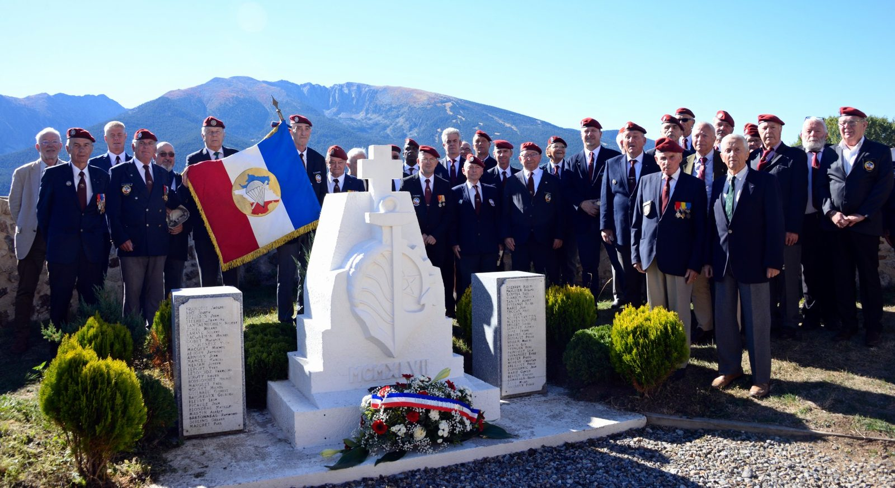

Amicale des anciens du 1er Bataillon de choc et du C.N.E.C.
Amicale des anciens du 1er Bataillon de choc et du C.N.E.C.
L'association
Association régie par la loi du 1er juillet 1901, elle rassemble anciens cadres, stagiaires brevetés et amis du centre.

L'association, qui s'interdit toute activité à caractère politique ou confessionnel, est fondée sur la solidarité et la mémoire.
Elle a pour but de :
- maintenir et développer les liens de camaraderie entre tous ceux qui ont servi au centre ou y ont été brevetés ;
- perpétuer la mémoire du Bataillon de choc, des commandos et des unités qui en sont issues ;
- venir en aide, moralement et matériellement, aux anciens et à leurs familles ;
- participer aux cérémonies patriotiques et à l'entretien des lieux de mémoire ;
- contribuer au rayonnement du centre et au soutien de ses stagiaires.
Qui peut adhérer ?
Tout ancien cadre ou personnel du centre, tout titulaire d'un brevet ou d'un certificat délivré par le CNEC, ainsi que toute personne agréée par le bureau au titre de membre sympathisant.
Statuts et fonctionnement
L'association est administrée par un conseil d'administration élu en assemblée générale, qui désigne en son sein un bureau. Les statuts et le règlement intérieur sont consultables dans l'onglet Documents.
AABC-CNEC / 1er Choc
BP 10355
66003 Perpignan Cedex
aabc.cnec.1er.rgt.de.choc@gmail.com
Loi 1901
Déclarée en préfecture des Pyrénées-Orientales — n° W663000019
25 € par an
Année civile, appel de cotisation en janvier, règlement en ligne ou par chèque.
Le bureau
Pour joindre un membre du bureau, écrivez au siège de l'amicale ou passez par la page Contact.
Nos délégations régionales
10 régionsChaque délégué est le relais de l'amicale dans sa région : il organise les retrouvailles locales, représente l'association aux cérémonies et accueille les nouveaux adhérents.
| Région | Délégué |
|---|---|
| Aquitaine et Midi-Pyrénées | MICHELINI Alain |
| Nord · Nord-Est Auxois-Morvan | ANSELM Didier |
| Centre-Ouest | AUDOYER Jean-François |
| Corse | PRIVE Jacky |
| Grand-Ouest | Poste vacant |
| Île-de-France | ARENE Jean-Marie |
| Languedoc-Roussillon | VICTOR Gérard |
| Rhône-Alpes | BLANC Bernard |
| Sud-Est | BIGA Denis |
Votre région n'a pas de délégué ? Les candidatures sont à adresser au siège, à Perpignan, ou au président. Trois délégations sont à pourvoir : Grand-Ouest.